(30) SLC: full-brn-begin¶
Motivation: Create a \(n=128\) repository for new SLC exploration. This will essentially use \(resolution = 100~\mu m\) (because the co-reg is using that) but I will creapte a \(resolution = 25~\mu m\) anways.
Note: this is incomplete. Will later come back and continue (for example, fixing
get_accepted_regions()is next, etc.)
# HIDE CODE
import os, sys
from os.path import join as pjoin
from IPython.display import display, IFrame, HTML
# tmp & extras dir
git_dir = pjoin(os.environ['HOME'], 'Dropbox/git')
extras_dir = pjoin(git_dir, 'jb-Ca-fMRI/_extras')
fig_base_dir = pjoin(git_dir, 'jb-Ca-fMRI/figs')
tmp_dir = pjoin(git_dir, 'jb-Ca-fMRI/tmp')
# GitHub
sys.path.insert(0, pjoin(git_dir, '_Ca-fMRI'))
from figures.fighelper import *
from analysis.final import *
from utils.render import *
# warnings, tqdm, & style
warnings.filterwarnings('ignore', category=DeprecationWarning)
from tqdm.notebook import tqdm
%matplotlib inline
set_style()
Fit parcel¶
Resolution = 100¶
mice = Mice(Config(128, resolution=100))
[PROGRESS] 'config.json' saved at /home/hadi/Documents/Ca-fMRI/processed/norm-global_parcel-columnar_n-128*3
ROI lookup not found, time to run organize_func() . . .
combine metadata not found, time to run cat_data() . . .
%%time
mice.parcel.fit_parcel('infer', True)
[PROGRESS] fit columnar: initiated
[PROGRESS] kmeans fit: done
[PROGRESS] save 2D, 10um: done
[PROGRESS] 2d --> 3d: done
[PROGRESS] save 3D, 10um: done
[PROGRESS] downsample: done
num regions, left: 384, right: 384 region id diff, r - l: Counter({384: 384})
[PROGRESS] fit columnar: done
[PROGRESS] fit subcortical: initiated
[PROGRESS] fit subcortical: done
[PROGRESS] create regions df: done
[PROGRESS] erode: done
[PROGRESS] 'cols_100um.npy' saved at /home/hadi/Documents/Ca-fMRI/processed/norm-global_parcel-columnar_n-128*3/parcellation
[PROGRESS] 'brain_100um.npy' saved at /home/hadi/Documents/Ca-fMRI/processed/norm-global_parcel-columnar_n-128*3/parcellation
[PROGRESS] 'cortex_100um.npy' saved at /home/hadi/Documents/Ca-fMRI/processed/norm-global_parcel-columnar_n-128*3/parcellation
[PROGRESS] 'subcortex_100um.npy' saved at /home/hadi/Documents/Ca-fMRI/processed/norm-global_parcel-columnar_n-128*3/parcellation
[PROGRESS] 'cortex-top_100um.npy' saved at /home/hadi/Documents/Ca-fMRI/processed/norm-global_parcel-columnar_n-128*3/parcellation
[PROGRESS] 'brain-eroded_100um.npy' saved at /home/hadi/Documents/Ca-fMRI/processed/norm-global_parcel-columnar_n-128*3/parcellation
[PROGRESS] 'nonzero-idxs_parcel2d-flat_100um.npy' saved at /home/hadi/Documents/Ca-fMRI/processed/norm-global_parcel-columnar_n-128*3/parcellation
[PROGRESS] 'nonzero-idxs_parcel2d-top_100um.npy' saved at /home/hadi/Documents/Ca-fMRI/processed/norm-global_parcel-columnar_n-128*3/parcellation
[PROGRESS] 'nonzero-idxs_parcel3d_100um.npy' saved at /home/hadi/Documents/Ca-fMRI/processed/norm-global_parcel-columnar_n-128*3/parcellation
[PROGRESS] 'region-idxs_parcel2d-flat_100um.npy' saved at /home/hadi/Documents/Ca-fMRI/processed/norm-global_parcel-columnar_n-128*3/parcellation
[PROGRESS] 'region-idxs_parcel2d-top_100um.npy' saved at /home/hadi/Documents/Ca-fMRI/processed/norm-global_parcel-columnar_n-128*3/parcellation
[PROGRESS] 'region-idxs_parcel3d_100um.npy' saved at /home/hadi/Documents/Ca-fMRI/processed/norm-global_parcel-columnar_n-128*3/parcellation
[PROGRESS] 'shape_parcel2d-flat_100um.npy' saved at /home/hadi/Documents/Ca-fMRI/processed/norm-global_parcel-columnar_n-128*3/parcellation
[PROGRESS] 'shape_parcel2d-top_100um.npy' saved at /home/hadi/Documents/Ca-fMRI/processed/norm-global_parcel-columnar_n-128*3/parcellation
[PROGRESS] 'shape_parcel3d_100um.npy' saved at /home/hadi/Documents/Ca-fMRI/processed/norm-global_parcel-columnar_n-128*3/parcellation
[PROGRESS] 'regions.df' saved at /home/hadi/Documents/Ca-fMRI/processed/norm-global_parcel-columnar_n-128*3/parcellation
[PROGRESS] 'fit_meta.npy' saved at /home/hadi/Documents/Ca-fMRI/processed/norm-global_parcel-columnar_n-128*3/parcellation
[PROGRESS] save results: done.
CPU times: user 2h 34min 40s, sys: 16min 29s, total: 2h 51min 10s
Wall time: 11min 24s
mice.parcel.fit_meta
{ 'time_start': '2023_02_06,12:02', 'ctx_missing': [], 'subctx_num': { 'OLF': 145, 'HIP': 74, 'RHP': 58, 'CTXsp': 28, 'STR': 141, 'PAL': 29, 'TH': 63, 'HY': 47, 'MB': 114, 'P': 52, 'MY': 96, 'CB': 168 }, 'subctx_bad': { 'OLF': 2, 'HIP': 4, 'RHP': 2, 'CTXsp': 0, 'STR': 2, 'PAL': 0, 'TH': 0, 'HY': 2, 'MB': 2, 'P': 2, 'MY': 0, 'CB': 0 }, 'eroded-radii': { 'Isocortex-0': 2.719102115583514, 'Isocortex-1': 2.233832815502203, 'Isocortex-2': 1.8823941872447283, 'OLF': 2.669839833942877, 'HIP': 2.652555978765983, 'RHP': 2.6140985274298894, 'CTXsp': 2.6638303574795232, 'STR': 2.7045961467468294, 'PAL': 2.543543915675433, 'TH': 2.7392922989650064, 'HY': 2.7331860495012856, 'MB': 2.763917601219168, 'P': 2.7245725993175265, 'MY': 2.7950540439064877, 'CB': 2.678951334283115 }, 'time_end': '2023_02_06,12:13' }
Save masks¶
now eroded\(-post-\)included.
from register.register import Register
mice = Mice(Config(128, resolution=100), load_parcel=True, load_allen=True)
reg = Register(mice)
ROI lookup not found, time to run organize_func() . . .
combine metadata not found, time to run cat_data() . . .
%%time
obj_all = reg.register_anat(save_results=True, anchor_ses=2)
len(obj_all)
100%|███████████████████████████████████████████| 10/10 [06:35<00:00, 39.58s/it]
CPU times: user 3h 46min 53s, sys: 1min 35s, total: 3h 48min 28s
Wall time: 8min 19s
30
df = []
for key, obj in obj_all.items():
for lbl in ['brain', 'eroded']:
sz = unique_idxs(obj[lbl].numpy())
sz = {
int(i): len(idxs) for
i, idxs in sz.items()
}
df.append({
'key': [key] * len(sz),
'label': [lbl] * len(sz),
'id': sz.keys(),
'size': sz.values(),
})
df = pd.DataFrame(merge_dicts(df))
fig, ax = create_figure(figsize=(16, 3))
sns.histplot(
data=df,
x='size',
hue='label',
stat='percent',
bins=np.linspace(0, 45, 46) - 0.5,
legend=True,
ax=ax,
)
ax.set_xlabel('size [voxels]', fontsize=12)
ax.set_ylabel('percent', fontsize=12)
ax.locator_params(axis='x', nbins=50)
ax.set_xlim(-0.5, 40.5)
ax.grid()
plt.show()
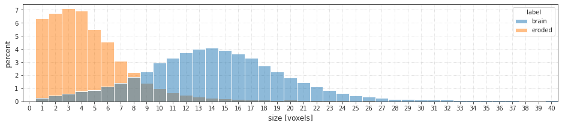
fig_dir = '/home/hadi/Dropbox/git/jb-Ca-fMRI/figs/parcellation/register_QC'
kws_fig = {
'transparent': True,
'bbox_inches': 'tight',
'dpi': 300,
}
fig.savefig(pjoin(fig_dir, 'roi_sizes_eroded.pdf'), **kws_fig)
START¶
Now fixing: get_accepted_regions()
END¶
More tasks:¶
Doing now: rewrite/review: get_accepted_regions() from register
rewrite/review: rank_order_regions() from parcellation
Which type of erosion?¶
from register.register import Register
mice = Mice(Config(192, resolution=25))
reg = Register(mice)
in_house = reg.load_in_house().numpy()
ROI lookup not found, time to run organize_func() . . .
combine metadata not found, time to run cat_data() . . .
brain = 'Symmetric_N162_space-indiv3d_brain.nii.gz'
brain = ants.image_read(
filename=pjoin(mice.cfg.masks_dir, brain),
pixeltype='unsigned int',
).numpy()
eroded = 'Symmetric_N162_space-indiv3d_brain-eroded.nii.gz'
eroded = ants.image_read(
filename=pjoin(mice.cfg.masks_dir, eroded),
pixeltype='unsigned int',
).numpy()
brain.shape, eroded.shape
---------------------------------------------------------------------------
ValueError Traceback (most recent call last)
Input In [12], in <cell line: 2>()
1 brain = 'Symmetric_N162_space-indiv3d_brain.nii.gz'
----> 2 brain = ants.image_read(
3 filename=pjoin(mice.cfg.masks_dir, brain),
4 pixeltype='unsigned int',
5 ).numpy()
6 eroded = 'Symmetric_N162_space-indiv3d_brain-eroded.nii.gz'
7 eroded = ants.image_read(
8 filename=pjoin(mice.cfg.masks_dir, eroded),
9 pixeltype='unsigned int',
10 ).numpy()
File ~/anaconda3/lib/python3.8/site-packages/ants/core/ants_image_io.py:515, in image_read(filename, dimension, pixeltype, reorient)
513 filename = os.path.expanduser(filename)
514 if not os.path.exists(filename):
--> 515 raise ValueError("File %s does not exist!" % filename)
517 hinfo = image_header_info(filename)
518 ptype = hinfo["pixeltype"]
ValueError: File /home/hadi/Documents/Ca-fMRI/processed/norm-global_parcel-columnar_n-192*3/masks/Symmetric_N162_space-indiv3d_brain.nii.gz does not exist!
fig, axes = create_figure(1, 2, (13, 7), 'all', 'all', constrained_layout=True)
x2p1 = brain[..., 40].T
x2p2 = eroded[..., 40].T
for ax in axes.flat:
ax.imshow(mwh(in_house[..., 40].T < 4000, in_house[..., 40].T), cmap='Greys_r')
axes[0].imshow(mwh(x2p1 == 0, x2p1), alpha=0.5, cmap='Spectral_r')
axes[1].imshow(mwh(x2p2 == 0, x2p2), alpha=0.5, cmap='Spectral_r')
remove_ticks(axes)
plt.show()
from register.parcellation import erode_parcellation, sp_spat
eroded2, r = erode_parcellation(brain, 'boundary')
eroded2.shape, r
((60, 46, 81), 'boundary')
data2p = filter_boundaries(
x_list=[brain[..., 40].T, eroded[..., 40].T, eroded2[..., 40].T, in_house[..., 40].T],
mask=in_house[..., 40].T > 4000,
)
fig, axes = create_figure(1, 3, (13, 4), 'all', 'all', constrained_layout=True)
for ax in axes.flat:
ax.imshow(mwh(data2p[-1] < 4000, data2p[-1]), cmap='Greys_r')
for i, x2p in enumerate(data2p[:-1]):
axes[i].imshow(mwh(x2p == 0, x2p), alpha=0.5, cmap='Spectral_r')
remove_ticks(axes)
plt.show()
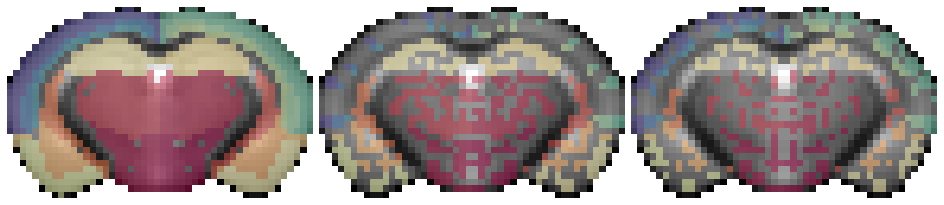
ids_x = list(unique_idxs(eroded2))
len(ids_x)
2700
missing = sorted(set(unique_idxs(brain)) - set(ids_x))
len(missing)
78
m = np.isin(brain, missing)
eroded2[m] = brain[m]
ids_x = list(unique_idxs(eroded2))
len(ids_x)
2778
missing = sorted(set(mice.parcel.df['id']) - set(unique_idxs(brain)))
missing
[258, 362, 642, 746]
data2p = filter_boundaries(
x_list=[brain[..., 40].T, eroded[..., 40].T, eroded2[..., 40].T, in_house[..., 40].T],
mask=in_house[..., 40].T > 4000,
)
fig, axes = create_figure(1, 3, (13, 4), 'all', 'all', constrained_layout=True)
for ax in axes.flat:
ax.imshow(mwh(data2p[-1] < 4000, data2p[-1]), cmap='Greys_r')
for i, x2p in enumerate(data2p[:-1]):
axes[i].imshow(mwh(x2p == 0, x2p), alpha=1, cmap='Spectral_r')
remove_ticks(axes)
plt.show()
data2p = filter_boundaries(
x_list=[brain[:, 10], eroded[:, 10], eroded2[:, 10], in_house[:, 10]],
mask=in_house[:, 10] > 4000,
)
fig, axes = create_figure(1, 3, (13, 4), 'all', 'all', constrained_layout=True)
for ax in axes.flat:
ax.imshow(mwh(data2p[-1] < 4000, data2p[-1]), cmap='Greys_r')
for i, x2p in enumerate(data2p[:-1]):
axes[i].imshow(mwh(x2p == 0, x2p), alpha=1, cmap='Spectral_r')
remove_ticks(axes)
plt.show()
data2p = filter_boundaries(
x_list=[brain[24], eroded[24], eroded2[24], in_house[24]],
mask=in_house[24] > 2000,
)
fig, axes = create_figure(1, 3, (13, 4), 'all', 'all', constrained_layout=True)
for ax in axes.flat:
ax.imshow(mwh(data2p[-1] < 2000, data2p[-1]), cmap='Greys_r')
for i, x2p in enumerate(data2p[:-1]):
axes[i].imshow(mwh(x2p == 0, x2p), alpha=1, cmap='Spectral_r')
remove_ticks(axes)
plt.show()
missing = sorted(set(unique_idxs(brain)) - set(unique_idxs(eroded)))
len(missing)
22
m = np.isin(brain, missing)
eroded[m] = brain[m]
sizes_brain = unique_idxs(brain)
sizes_1 = unique_idxs(eroded)
sizes_2 = unique_idxs(eroded2)
sizes_brain = {i: len(v) for i, v in sizes_brain.items()}
sizes_1 = {i: len(v) for i, v in sizes_1.items()}
sizes_2 = {i: len(v) for i, v in sizes_2.items()}
len(sizes_brain), len(sizes_1), len(sizes_2)
(2778, 2778, 2778)
sns.histplot(list(sizes_brain.values()), color='C0', label='brain', bins=np.linspace(0, 50, 51))
sns.histplot(list(sizes_1.values()), color='C1', label='eroded', bins=np.linspace(0, 50, 51))
sns.histplot(list(sizes_2.values()), color='C2', label='eroded 2', bins=np.linspace(0, 50, 51))
plt.legend()
plt.show()
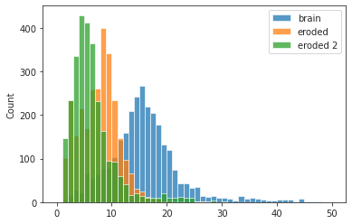
Save masks¶
# HIDE CODE
def _apply():
obj = ants.apply_transforms(
fixed=affined,
moving=reg.img_in_ccf(mask),
transformlist=tx['invtransforms'],
interpolator='genericLabel',
)
obj = tx_aff_inv.apply_to_image(
image=obj,
reference=reg.in_house,
interpolation='multilabel',
)
obj = obj.numpy()
for i_new, i in enumerate(np.unique(obj[obj.nonzero()])):
obj[obj == i] = i_new + 1
return obj
Prepare¶
from register.register import Register
mice = Mice(Config(128, resolution=25), load_parcel=True)
mice.set_band(band_bo=(0.008,0.28))
reg = Register(mice)
ROI lookup not found, time to run organize_func() . . .
combine metadata not found, time to run cat_data() . . .
Registration subtasks¶
Test if transform is correct¶
tx_fwd, tx_aff = reg.load_tx(reg.in_house_name, is_inv=False)
tx_inv, _ = reg.load_tx(reg.in_house_name, is_inv=True)
tx = {'fwdtransforms': tx_fwd, 'invtransforms': tx_inv}
tx_aff_inv = tx_aff.invert()
affined = tx_aff.apply_to_image(
image=reg.in_house,
reference=reg.template,
interpolation='linear',
)
mask = mice.al.get_masks(['fiber tracts', 'VS', 'Isocortex'], as_objectmap=True)
reg.mi_base = ants.image_mutual_information(
image1=reg.template, image2=reg.template)
scores, misc, warped = reg.tx_peformance(
fixed=reg.template,
moving=affined,
moving_orig=reg.in_house,
tx_aff=tx_aff,
tx=tx,
)
obj = _apply()
scores
{ 'mi': 0.551089256337447, 'ovp_MOp': 1.0, 'sym_MOp': 1.0, 'ovp_MOs': 1.0, 'sym_MOs': 0.9939117199391172, 'ovp_SS': 1.0, 'sym_SS': 0.9986366734832992, 'ovp_VISC': 1.0, 'sym_VISC': 1.0, 'ovp_VIS': 1.0, 'sym_VIS': 0.9967897271268058, 'ovp_AI': 1.0, 'sym_AI': 0.9974747474747475, 'ovp_PTLp': 1.0, 'sym_PTLp': 0.9509803921568627, 'ovp_TEa': 1.0, 'sym_TEa': 0.9699248120300752, 'ovp_CA1': 1.0, 'sym_CA1': 0.9979633401221996, 'ovp_CLA': 1.0, 'sym_CLA': 1.0, 'ovp_STRd': 1.0, 'sym_STRd': 0.9975083056478405, 'ovp_iso': 1.0, 'sym_iso': 0.9962010015541357, 'sym': 0.9960617110315744, 'ovp': 1.0 }
fig, axes = create_figure(2, 3, (13.5, 7), 'all', 'all', constrained_layout=True)
s_ = 29
for ax in axes[0].flat:
ax.imshow(reg.in_house[s_], cmap='Greys_r')
axes[0, 1].imshow(mwh(obj[s_] == 0, obj[s_]), alpha=1, vmin=1.5, vmax=3.5, cmap='Spectral_r')
axes[0, 2].imshow(mwh(obj[s_] != 2, obj[s_]), alpha=0.5, vmin=0, vmax=10, cmap='Reds')
s_ = 41
for ax in axes[1].flat:
ax.imshow(reg.in_house[s_], cmap='Greys_r')
axes[1, 1].imshow(mwh(obj[s_] == 0, obj[s_]), alpha=1, vmin=1.5, vmax=3.5, cmap='Spectral_r')
axes[1, 2].imshow(mwh(obj[s_] != 2, obj[s_]), alpha=0.5, vmin=0, vmax=10, cmap='Reds')
plt.show()
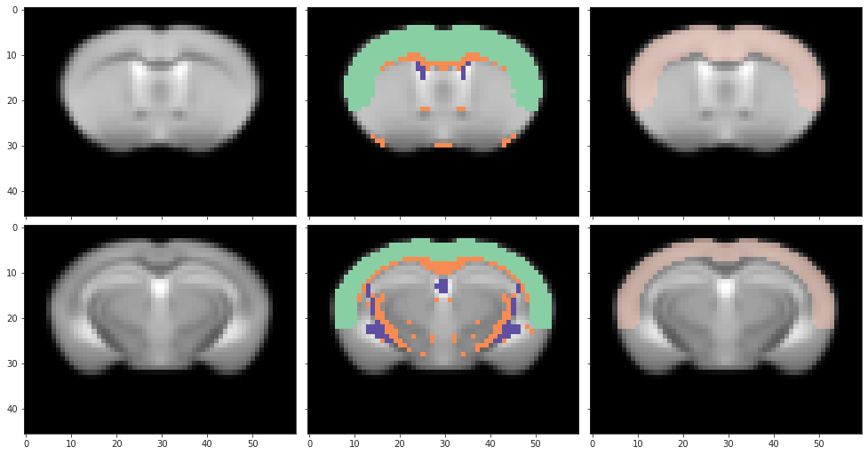
fig, axes = create_figure(1, 3, (13, 6), 'all', 'all', constrained_layout=True)
for i in range(3):
axes[i].imshow(reg.template[240], cmap='Greys_r')
axes[0].imshow(mwh(affined[240] < 4000, affined[240]), alpha=0.5, cmap='Spectral')
axes[1].imshow(mwh(warped[240] < 4000, warped[240]), alpha=0.5, cmap='Spectral')
plt.show()
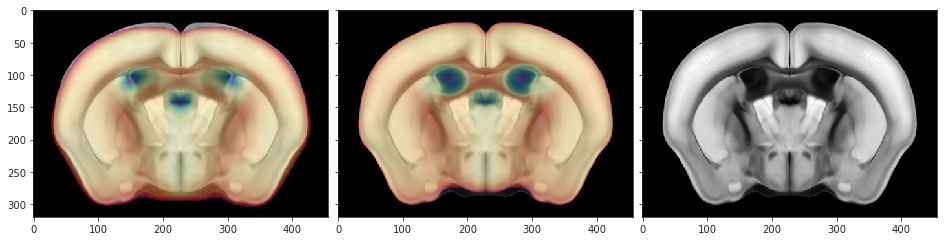
Run equivalent of register_anat to save masks¶
%%time
tx, tx_aff = reg.load_tx(reg.in_house_name)
affined = tx_aff.apply_to_image(
image=reg.in_house,
reference=reg.template,
interpolation='linear',
)
_ = reg._apply_tx_obj2lps(
tx=tx,
tx_aff=tx_aff,
moving=affined,
name=reg.in_house_name,
moving_orig=reg.in_house,
save_results=True,
extras=False,
use_mm=True,
)
Takes about 20 mins
Load full brain, erode¶
from register.parcellation import erode_parcellation
brain = 'Symmetric_N162_space-indiv3d_brain.nii.gz'
brain = ants.image_read(
filename=pjoin(mice.cfg.masks_dir, brain),
pixeltype='unsigned int',
).numpy()
brain.shape
(60, 46, 81)
eroded, r = erode_parcellation(brain, 'boundary')
eroded.shape, r
((60, 46, 81), 'boundary')
missing = sorted(set(unique_idxs(brain)) - set(unique_idxs(eroded)))
len(missing)
78
m = np.isin(brain, missing)
eroded[m] = brain[m]
missing = sorted(set(mice.parcel.df['id']) - set(unique_idxs(eroded)))
mice.parcel.df.loc[mice.parcel.df['id'].isin(missing)]
| id | acro | hemis | region | layer | |
|---|---|---|---|---|---|
| 257 | 258 | Isocortex | 1 | 2 | 2 |
| 361 | 362 | Isocortex | 1 | 106 | 2 |
| 641 | 642 | Isocortex | 2 | 2 | 2 |
| 745 | 746 | Isocortex | 2 | 106 | 2 |
Plot results¶
in_house = reg.load_in_house().numpy()
fig, axes = create_figure(2, 3, (13, 6), width_ratios=[1, 0.95, 1.2], constrained_layout=True)
for i, (axis, s_) in enumerate([(2, 40), (1, 10), (0, 24)]):
data2p = filter_boundaries(
x_list=[
np.take(brain, s_, axis),
np.take(eroded, s_, axis),
np.take(in_house, s_, axis)],
mask=np.take(in_house, s_, axis) > 2000,
)
if axis == 2:
data2p = [e.T for e in data2p]
for ax in axes[:, i].flat:
ax.imshow(mwh(data2p[-1] < 2000, data2p[-1]), cmap='Greys_r')
for j, x2p in enumerate(data2p[:-1]):
axes[j, i].imshow(mwh(x2p == 0, x2p), alpha=1, cmap='Spectral_r')
remove_ticks(axes)
plt.show()
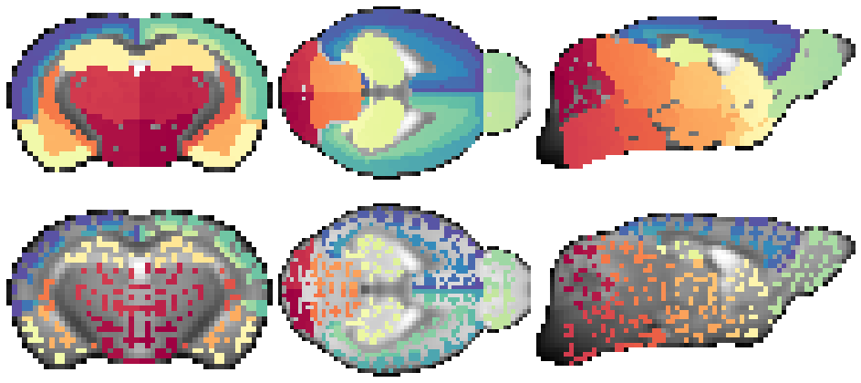
sizes_brain = unique_idxs(brain)
sizes_eroded = unique_idxs(eroded)
sizes_brain = {i: len(v) for i, v in sizes_brain.items()}
sizes_eroded = {i: len(v) for i, v in sizes_eroded.items()}
len(sizes_brain), len(sizes_eroded)
(2778, 2778)
sns.histplot(list(sizes_brain.values()), color='C0', label='brain', stat='percent', bins=np.linspace(0, 50, 51))
sns.histplot(list(sizes_eroded.values()), color='C1', label='eroded', stat='percent', bins=np.linspace(0, 50, 51))
plt.legend(fontsize=14)
plt.show()
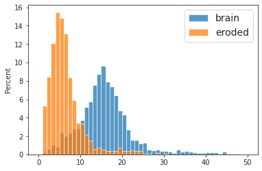
Invert to match shapes¶
in_house = in_house[::-1][:, ::-1]
eroded = eroded[::-1][:, ::-1]
plt.imshow(in_house[..., 40].T, cmap='Greys_r')
plt.imshow(mwh(eroded[..., 40].T == 0, eroded[..., 40].T), cmap='Spectral_r');
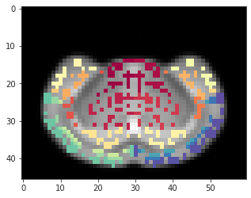
Get files, xtract, save¶
files = sorted(filter(
lambda f: 'sub-DKI' in f or 'sub-WT'in f,
os.listdir(mice.cfg.raw_dir),
))
len(files)
348
Masks all¶
%%time
masks = []
for f in files:
x = ants.image_read(pjoin(mice.cfg.raw_dir, f))
masks.append(np.abs(x.numpy()).sum(-1) > 0)
mask_and = functools.reduce(np.logical_and, masks)
mask_or = functools.reduce(np.logical_or, masks)
_ = save_obj(
obj=mask_and,
file_name='AD_mask_and',
save_dir=tmp_dir,
mode='npy',
)
_ = save_obj(
obj=mask_or,
file_name='AD_mask_or',
save_dir=tmp_dir,
mode='npy',
)
[PROGRESS] 'AD_mask_and.npy' saved at /home/hadi/Dropbox/git/jb-Ca-fMRI/tmp
[PROGRESS] 'AD_mask_or.npy' saved at /home/hadi/Dropbox/git/jb-Ca-fMRI/tmp
CPU times: user 9min 27s, sys: 2min 34s, total: 12min 1s
Wall time: 12min 38s
len(unique_idxs(eroded[~mask_or]))
918
eroded[~mask_or] = 0
x2p = eroded[..., 40].T.copy()
x2p = filter_boundaries(x2p)
for i, r in enumerate(np.unique(x2p[x2p.nonzero()]), start=1):
x2p[x2p == r] = i
x2p = mwh(x2p == 0, x2p)
fig, axes = create_figure(1, 2, (8, 3), constrained_layout=True)
axes[0].imshow(mwh(x2p == 0, x2p), cmap=sns.color_palette('husl', as_cmap=True))
axes[1].imshow(mwh(x2p == 0, x2p), cmap=get_rand_cmap(len(np.unique(x2p[x2p.nonzero()]))))
remove_ticks(axes)
plt.show()
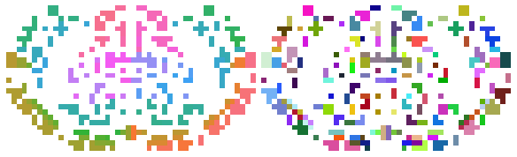
# Used to be brain
ids = np.unique(eroded[eroded.nonzero()])
n2i = {
n: r for n, r
in enumerate(ids)
}
_ = save_obj(
obj=n2i,
file_name='AD_n2i',
save_dir=tmp_dir,
mode='npy',
)
len(n2i)
[PROGRESS] 'AD_n2i.npy' saved at /home/hadi/Dropbox/git/jb-Ca-fMRI/tmp
2365
Data all¶
%%time
percent = {}
data_all = {}
for f in files:
key = '_'.join(f.split('_')[:3])
x = pjoin(mice.cfg.raw_dir, f)
x = ants.image_read(x).numpy()
data = np_nans((len(n2i), x.shape[-1]))
for n, i in n2i.items():
m = eroded == i
if m.sum() == 0:
print(mice.parcel(i))
continue
y = x[m].mean(0)
if y.std() == 0:
continue
data[n] = y
data_all[key] = data
bad = np.isnan(data).sum(-1) == data.shape[-1]
p = bad.sum() / len(data) * 100
percent[key] = p
msg = f"{key}:\t\ta total of {bad.sum()} / {len(data)} "
msg += f"({p:0.1f} %) ROIs had zero STD"
print(msg)
_ = save_obj(
obj=data_all,
file_name='AD_data',
save_dir=tmp_dir,
mode='npy',
)
len(data_all)
sub-DKI01_ses-1_run-1: a total of 147 / 2365 (6.2 %) ROIs had zero STD
sub-DKI01_ses-1_run-2: a total of 112 / 2365 (4.7 %) ROIs had zero STD
sub-DKI01_ses-1_run-3: a total of 127 / 2365 (5.4 %) ROIs had zero STD
sub-DKI02_ses-1_run-1: a total of 149 / 2365 (6.3 %) ROIs had zero STD
sub-DKI02_ses-1_run-2: a total of 170 / 2365 (7.2 %) ROIs had zero STD
sub-DKI02_ses-1_run-3: a total of 148 / 2365 (6.3 %) ROIs had zero STD
sub-DKI02_ses-2_run-1: a total of 79 / 2365 (3.3 %) ROIs had zero STD
sub-DKI02_ses-2_run-2: a total of 213 / 2365 (9.0 %) ROIs had zero STD
sub-DKI02_ses-2_run-3: a total of 144 / 2365 (6.1 %) ROIs had zero STD
sub-DKI03_ses-1_run-1: a total of 208 / 2365 (8.8 %) ROIs had zero STD
sub-DKI03_ses-1_run-2: a total of 143 / 2365 (6.0 %) ROIs had zero STD
sub-DKI03_ses-1_run-3: a total of 206 / 2365 (8.7 %) ROIs had zero STD
sub-DKI04_ses-1_run-1: a total of 279 / 2365 (11.8 %) ROIs had zero STD
sub-DKI04_ses-1_run-2: a total of 275 / 2365 (11.6 %) ROIs had zero STD
sub-DKI04_ses-1_run-3: a total of 322 / 2365 (13.6 %) ROIs had zero STD
sub-DKI04_ses-2_run-1: a total of 212 / 2365 (9.0 %) ROIs had zero STD
sub-DKI04_ses-2_run-2: a total of 164 / 2365 (6.9 %) ROIs had zero STD
sub-DKI04_ses-2_run-3: a total of 214 / 2365 (9.0 %) ROIs had zero STD
sub-DKI05_ses-1_run-1: a total of 247 / 2365 (10.4 %) ROIs had zero STD
sub-DKI05_ses-1_run-2: a total of 207 / 2365 (8.8 %) ROIs had zero STD
sub-DKI05_ses-1_run-3: a total of 137 / 2365 (5.8 %) ROIs had zero STD
sub-DKI06_ses-1_run-1: a total of 198 / 2365 (8.4 %) ROIs had zero STD
sub-DKI06_ses-1_run-2: a total of 203 / 2365 (8.6 %) ROIs had zero STD
sub-DKI06_ses-1_run-3: a total of 178 / 2365 (7.5 %) ROIs had zero STD
sub-DKI06_ses-2_run-1: a total of 203 / 2365 (8.6 %) ROIs had zero STD
sub-DKI06_ses-2_run-2: a total of 201 / 2365 (8.5 %) ROIs had zero STD
sub-DKI06_ses-2_run-3: a total of 202 / 2365 (8.5 %) ROIs had zero STD
sub-DKI07_ses-1_run-1: a total of 210 / 2365 (8.9 %) ROIs had zero STD
sub-DKI07_ses-1_run-2: a total of 195 / 2365 (8.2 %) ROIs had zero STD
sub-DKI07_ses-1_run-3: a total of 197 / 2365 (8.3 %) ROIs had zero STD
sub-DKI07_ses-2_run-1: a total of 175 / 2365 (7.4 %) ROIs had zero STD
sub-DKI07_ses-2_run-2: a total of 222 / 2365 (9.4 %) ROIs had zero STD
sub-DKI07_ses-2_run-3: a total of 185 / 2365 (7.8 %) ROIs had zero STD
sub-DKI08_ses-1_run-1: a total of 157 / 2365 (6.6 %) ROIs had zero STD
sub-DKI08_ses-1_run-2: a total of 193 / 2365 (8.2 %) ROIs had zero STD
sub-DKI08_ses-1_run-3: a total of 195 / 2365 (8.2 %) ROIs had zero STD
sub-DKI09_ses-1_run-1: a total of 152 / 2365 (6.4 %) ROIs had zero STD
sub-DKI09_ses-1_run-2: a total of 136 / 2365 (5.8 %) ROIs had zero STD
sub-DKI09_ses-1_run-3: a total of 157 / 2365 (6.6 %) ROIs had zero STD
sub-DKI09_ses-2_run-1: a total of 116 / 2365 (4.9 %) ROIs had zero STD
sub-DKI09_ses-2_run-2: a total of 124 / 2365 (5.2 %) ROIs had zero STD
sub-DKI09_ses-2_run-3: a total of 176 / 2365 (7.4 %) ROIs had zero STD
sub-DKI09_ses-3_run-1: a total of 256 / 2365 (10.8 %) ROIs had zero STD
sub-DKI09_ses-3_run-2: a total of 219 / 2365 (9.3 %) ROIs had zero STD
sub-DKI09_ses-3_run-3: a total of 190 / 2365 (8.0 %) ROIs had zero STD
sub-DKI10_ses-1_run-1: a total of 194 / 2365 (8.2 %) ROIs had zero STD
sub-DKI10_ses-1_run-2: a total of 164 / 2365 (6.9 %) ROIs had zero STD
sub-DKI10_ses-1_run-3: a total of 162 / 2365 (6.8 %) ROIs had zero STD
sub-DKI10_ses-2_run-1: a total of 161 / 2365 (6.8 %) ROIs had zero STD
sub-DKI10_ses-2_run-2: a total of 208 / 2365 (8.8 %) ROIs had zero STD
sub-DKI10_ses-2_run-3: a total of 143 / 2365 (6.0 %) ROIs had zero STD
sub-DKI10_ses-3_run-1: a total of 157 / 2365 (6.6 %) ROIs had zero STD
sub-DKI10_ses-3_run-2: a total of 263 / 2365 (11.1 %) ROIs had zero STD
sub-DKI10_ses-3_run-3: a total of 183 / 2365 (7.7 %) ROIs had zero STD
sub-DKI11_ses-1_run-1: a total of 248 / 2365 (10.5 %) ROIs had zero STD
sub-DKI11_ses-1_run-2: a total of 279 / 2365 (11.8 %) ROIs had zero STD
sub-DKI11_ses-1_run-3: a total of 276 / 2365 (11.7 %) ROIs had zero STD
sub-DKI11_ses-2_run-1: a total of 179 / 2365 (7.6 %) ROIs had zero STD
sub-DKI11_ses-2_run-2: a total of 158 / 2365 (6.7 %) ROIs had zero STD
sub-DKI11_ses-2_run-3: a total of 178 / 2365 (7.5 %) ROIs had zero STD
sub-DKI11_ses-3_run-1: a total of 241 / 2365 (10.2 %) ROIs had zero STD
sub-DKI11_ses-3_run-2: a total of 252 / 2365 (10.7 %) ROIs had zero STD
sub-DKI11_ses-3_run-3: a total of 210 / 2365 (8.9 %) ROIs had zero STD
sub-DKI12_ses-1_run-1: a total of 180 / 2365 (7.6 %) ROIs had zero STD
sub-DKI12_ses-1_run-2: a total of 236 / 2365 (10.0 %) ROIs had zero STD
sub-DKI12_ses-1_run-3: a total of 243 / 2365 (10.3 %) ROIs had zero STD
sub-DKI12_ses-2_run-1: a total of 104 / 2365 (4.4 %) ROIs had zero STD
sub-DKI12_ses-2_run-2: a total of 104 / 2365 (4.4 %) ROIs had zero STD
sub-DKI12_ses-2_run-3: a total of 203 / 2365 (8.6 %) ROIs had zero STD
sub-DKI12_ses-3_run-1: a total of 212 / 2365 (9.0 %) ROIs had zero STD
sub-DKI12_ses-3_run-2: a total of 189 / 2365 (8.0 %) ROIs had zero STD
sub-DKI12_ses-3_run-3: a total of 195 / 2365 (8.2 %) ROIs had zero STD
sub-DKI13_ses-1_run-1: a total of 221 / 2365 (9.3 %) ROIs had zero STD
sub-DKI13_ses-1_run-2: a total of 252 / 2365 (10.7 %) ROIs had zero STD
sub-DKI13_ses-1_run-3: a total of 200 / 2365 (8.5 %) ROIs had zero STD
sub-DKI14_ses-1_run-1: a total of 174 / 2365 (7.4 %) ROIs had zero STD
sub-DKI14_ses-1_run-2: a total of 197 / 2365 (8.3 %) ROIs had zero STD
sub-DKI14_ses-1_run-3: a total of 194 / 2365 (8.2 %) ROIs had zero STD
sub-DKI14_ses-3_run-1: a total of 163 / 2365 (6.9 %) ROIs had zero STD
sub-DKI14_ses-3_run-2: a total of 146 / 2365 (6.2 %) ROIs had zero STD
sub-DKI14_ses-3_run-3: a total of 137 / 2365 (5.8 %) ROIs had zero STD
sub-DKI15_ses-1_run-1: a total of 147 / 2365 (6.2 %) ROIs had zero STD
sub-DKI15_ses-1_run-2: a total of 144 / 2365 (6.1 %) ROIs had zero STD
sub-DKI15_ses-1_run-3: a total of 158 / 2365 (6.7 %) ROIs had zero STD
sub-DKI15_ses-3_run-1: a total of 205 / 2365 (8.7 %) ROIs had zero STD
sub-DKI15_ses-3_run-2: a total of 248 / 2365 (10.5 %) ROIs had zero STD
sub-DKI15_ses-3_run-3: a total of 165 / 2365 (7.0 %) ROIs had zero STD
sub-DKI16_ses-3_run-1: a total of 269 / 2365 (11.4 %) ROIs had zero STD
sub-DKI16_ses-3_run-2: a total of 298 / 2365 (12.6 %) ROIs had zero STD
sub-DKI17_ses-3_run-1: a total of 267 / 2365 (11.3 %) ROIs had zero STD
sub-DKI17_ses-3_run-2: a total of 324 / 2365 (13.7 %) ROIs had zero STD
sub-DKI17_ses-3_run-3: a total of 217 / 2365 (9.2 %) ROIs had zero STD
sub-DKI18_ses-3_run-1: a total of 188 / 2365 (7.9 %) ROIs had zero STD
sub-DKI18_ses-3_run-2: a total of 223 / 2365 (9.4 %) ROIs had zero STD
sub-DKI18_ses-3_run-3: a total of 282 / 2365 (11.9 %) ROIs had zero STD
sub-DKI19_ses-3_run-1: a total of 321 / 2365 (13.6 %) ROIs had zero STD
sub-DKI19_ses-3_run-2: a total of 282 / 2365 (11.9 %) ROIs had zero STD
sub-DKI19_ses-3_run-3: a total of 310 / 2365 (13.1 %) ROIs had zero STD
sub-DKI20_ses-3_run-1: a total of 179 / 2365 (7.6 %) ROIs had zero STD
sub-DKI20_ses-3_run-2: a total of 289 / 2365 (12.2 %) ROIs had zero STD
sub-DKI20_ses-3_run-3: a total of 227 / 2365 (9.6 %) ROIs had zero STD
sub-DKI21_ses-2_run-1: a total of 247 / 2365 (10.4 %) ROIs had zero STD
sub-DKI21_ses-2_run-2: a total of 257 / 2365 (10.9 %) ROIs had zero STD
sub-DKI21_ses-2_run-3: a total of 287 / 2365 (12.1 %) ROIs had zero STD
sub-DKI22_ses-5_run-1: a total of 196 / 2365 (8.3 %) ROIs had zero STD
sub-DKI22_ses-5_run-2: a total of 186 / 2365 (7.9 %) ROIs had zero STD
sub-DKI22_ses-5_run-3: a total of 184 / 2365 (7.8 %) ROIs had zero STD
sub-DKI22_ses-6_run-1: a total of 199 / 2365 (8.4 %) ROIs had zero STD
sub-DKI22_ses-6_run-2: a total of 135 / 2365 (5.7 %) ROIs had zero STD
sub-DKI22_ses-6_run-3: a total of 166 / 2365 (7.0 %) ROIs had zero STD
sub-DKI23_ses-5_run-1: a total of 229 / 2365 (9.7 %) ROIs had zero STD
sub-DKI23_ses-5_run-2: a total of 213 / 2365 (9.0 %) ROIs had zero STD
sub-DKI23_ses-5_run-3: a total of 246 / 2365 (10.4 %) ROIs had zero STD
sub-DKI23_ses-6_run-1: a total of 210 / 2365 (8.9 %) ROIs had zero STD
sub-DKI23_ses-6_run-2: a total of 208 / 2365 (8.8 %) ROIs had zero STD
sub-DKI23_ses-6_run-3: a total of 212 / 2365 (9.0 %) ROIs had zero STD
sub-DKI24_ses-5_run-1: a total of 195 / 2365 (8.2 %) ROIs had zero STD
sub-DKI24_ses-5_run-2: a total of 219 / 2365 (9.3 %) ROIs had zero STD
sub-DKI24_ses-5_run-3: a total of 218 / 2365 (9.2 %) ROIs had zero STD
sub-DKI24_ses-6_run-1: a total of 229 / 2365 (9.7 %) ROIs had zero STD
sub-DKI24_ses-6_run-2: a total of 193 / 2365 (8.2 %) ROIs had zero STD
sub-DKI24_ses-6_run-3: a total of 188 / 2365 (7.9 %) ROIs had zero STD
sub-DKI25_ses-5_run-1: a total of 191 / 2365 (8.1 %) ROIs had zero STD
sub-DKI25_ses-5_run-2: a total of 204 / 2365 (8.6 %) ROIs had zero STD
sub-DKI25_ses-5_run-3: a total of 242 / 2365 (10.2 %) ROIs had zero STD
sub-DKI25_ses-6_run-1: a total of 249 / 2365 (10.5 %) ROIs had zero STD
sub-DKI25_ses-6_run-2: a total of 246 / 2365 (10.4 %) ROIs had zero STD
sub-DKI25_ses-6_run-3: a total of 283 / 2365 (12.0 %) ROIs had zero STD
sub-DKI26_ses-5_run-1: a total of 195 / 2365 (8.2 %) ROIs had zero STD
sub-DKI26_ses-5_run-2: a total of 242 / 2365 (10.2 %) ROIs had zero STD
sub-DKI26_ses-6_run-1: a total of 217 / 2365 (9.2 %) ROIs had zero STD
sub-DKI26_ses-6_run-2: a total of 177 / 2365 (7.5 %) ROIs had zero STD
sub-DKI26_ses-6_run-3: a total of 183 / 2365 (7.7 %) ROIs had zero STD
sub-DKI27_ses-5_run-1: a total of 250 / 2365 (10.6 %) ROIs had zero STD
sub-DKI27_ses-5_run-2: a total of 181 / 2365 (7.7 %) ROIs had zero STD
sub-DKI27_ses-5_run-3: a total of 184 / 2365 (7.8 %) ROIs had zero STD
sub-DKI27_ses-6_run-1: a total of 174 / 2365 (7.4 %) ROIs had zero STD
sub-DKI27_ses-6_run-2: a total of 152 / 2365 (6.4 %) ROIs had zero STD
sub-DKI27_ses-6_run-3: a total of 143 / 2365 (6.0 %) ROIs had zero STD
sub-DKI28_ses-5_run-1: a total of 201 / 2365 (8.5 %) ROIs had zero STD
sub-DKI28_ses-5_run-2: a total of 203 / 2365 (8.6 %) ROIs had zero STD
sub-DKI28_ses-5_run-3: a total of 196 / 2365 (8.3 %) ROIs had zero STD
sub-DKI28_ses-6_run-1: a total of 229 / 2365 (9.7 %) ROIs had zero STD
sub-DKI28_ses-6_run-2: a total of 275 / 2365 (11.6 %) ROIs had zero STD
sub-DKI28_ses-6_run-3: a total of 250 / 2365 (10.6 %) ROIs had zero STD
sub-DKI29_ses-5_run-1: a total of 201 / 2365 (8.5 %) ROIs had zero STD
sub-DKI29_ses-5_run-2: a total of 179 / 2365 (7.6 %) ROIs had zero STD
sub-DKI29_ses-5_run-3: a total of 184 / 2365 (7.8 %) ROIs had zero STD
sub-DKI29_ses-6_run-1: a total of 203 / 2365 (8.6 %) ROIs had zero STD
sub-DKI29_ses-6_run-2: a total of 182 / 2365 (7.7 %) ROIs had zero STD
sub-DKI30_ses-5_run-1: a total of 201 / 2365 (8.5 %) ROIs had zero STD
sub-DKI30_ses-5_run-2: a total of 230 / 2365 (9.7 %) ROIs had zero STD
sub-DKI30_ses-5_run-3: a total of 164 / 2365 (6.9 %) ROIs had zero STD
sub-DKI30_ses-6_run-1: a total of 225 / 2365 (9.5 %) ROIs had zero STD
sub-DKI30_ses-6_run-2: a total of 220 / 2365 (9.3 %) ROIs had zero STD
sub-DKI30_ses-6_run-3: a total of 245 / 2365 (10.4 %) ROIs had zero STD
sub-DKI31_ses-5_run-1: a total of 241 / 2365 (10.2 %) ROIs had zero STD
sub-DKI31_ses-5_run-2: a total of 244 / 2365 (10.3 %) ROIs had zero STD
sub-DKI31_ses-5_run-3: a total of 253 / 2365 (10.7 %) ROIs had zero STD
sub-DKI31_ses-6_run-1: a total of 151 / 2365 (6.4 %) ROIs had zero STD
sub-DKI31_ses-6_run-2: a total of 232 / 2365 (9.8 %) ROIs had zero STD
sub-DKI31_ses-6_run-3: a total of 207 / 2365 (8.8 %) ROIs had zero STD
sub-DKI32_ses-5_run-1: a total of 274 / 2365 (11.6 %) ROIs had zero STD
sub-DKI32_ses-5_run-2: a total of 278 / 2365 (11.8 %) ROIs had zero STD
sub-DKI32_ses-5_run-3: a total of 251 / 2365 (10.6 %) ROIs had zero STD
sub-DKI32_ses-6_run-1: a total of 239 / 2365 (10.1 %) ROIs had zero STD
sub-DKI32_ses-6_run-2: a total of 218 / 2365 (9.2 %) ROIs had zero STD
sub-DKI32_ses-6_run-3: a total of 232 / 2365 (9.8 %) ROIs had zero STD
sub-DKI33_ses-5_run-1: a total of 284 / 2365 (12.0 %) ROIs had zero STD
sub-DKI33_ses-5_run-2: a total of 323 / 2365 (13.7 %) ROIs had zero STD
sub-DKI33_ses-5_run-3: a total of 293 / 2365 (12.4 %) ROIs had zero STD
sub-DKI33_ses-6_run-1: a total of 288 / 2365 (12.2 %) ROIs had zero STD
sub-DKI33_ses-6_run-2: a total of 285 / 2365 (12.1 %) ROIs had zero STD
sub-DKI33_ses-6_run-3: a total of 189 / 2365 (8.0 %) ROIs had zero STD
sub-DKI34_ses-5_run-1: a total of 259 / 2365 (11.0 %) ROIs had zero STD
sub-DKI34_ses-5_run-2: a total of 286 / 2365 (12.1 %) ROIs had zero STD
sub-DKI34_ses-5_run-3: a total of 235 / 2365 (9.9 %) ROIs had zero STD
sub-DKI34_ses-6_run-1: a total of 176 / 2365 (7.4 %) ROIs had zero STD
sub-DKI34_ses-6_run-2: a total of 161 / 2365 (6.8 %) ROIs had zero STD
sub-DKI34_ses-6_run-3: a total of 126 / 2365 (5.3 %) ROIs had zero STD
sub-DKI35_ses-5_run-1: a total of 163 / 2365 (6.9 %) ROIs had zero STD
sub-DKI35_ses-5_run-2: a total of 177 / 2365 (7.5 %) ROIs had zero STD
sub-DKI35_ses-5_run-3: a total of 156 / 2365 (6.6 %) ROIs had zero STD
sub-DKI36_ses-5_run-1: a total of 271 / 2365 (11.5 %) ROIs had zero STD
sub-DKI36_ses-5_run-2: a total of 292 / 2365 (12.3 %) ROIs had zero STD
sub-DKI36_ses-5_run-3: a total of 272 / 2365 (11.5 %) ROIs had zero STD
sub-DKI36_ses-6_run-1: a total of 189 / 2365 (8.0 %) ROIs had zero STD
sub-DKI36_ses-6_run-2: a total of 193 / 2365 (8.2 %) ROIs had zero STD
sub-DKI36_ses-6_run-3: a total of 203 / 2365 (8.6 %) ROIs had zero STD
sub-DKI37_ses-5_run-1: a total of 281 / 2365 (11.9 %) ROIs had zero STD
sub-DKI37_ses-5_run-2: a total of 293 / 2365 (12.4 %) ROIs had zero STD
sub-DKI37_ses-6_run-1: a total of 175 / 2365 (7.4 %) ROIs had zero STD
sub-DKI37_ses-6_run-2: a total of 202 / 2365 (8.5 %) ROIs had zero STD
sub-DKI38_ses-5_run-1: a total of 271 / 2365 (11.5 %) ROIs had zero STD
sub-DKI38_ses-5_run-2: a total of 295 / 2365 (12.5 %) ROIs had zero STD
sub-DKI38_ses-5_run-3: a total of 269 / 2365 (11.4 %) ROIs had zero STD
sub-DKI39_ses-5_run-1: a total of 344 / 2365 (14.5 %) ROIs had zero STD
sub-DKI39_ses-5_run-2: a total of 296 / 2365 (12.5 %) ROIs had zero STD
sub-DKI39_ses-5_run-3: a total of 385 / 2365 (16.3 %) ROIs had zero STD
sub-DKI39_ses-6_run-1: a total of 190 / 2365 (8.0 %) ROIs had zero STD
sub-DKI39_ses-6_run-2: a total of 183 / 2365 (7.7 %) ROIs had zero STD
sub-DKI39_ses-6_run-3: a total of 275 / 2365 (11.6 %) ROIs had zero STD
sub-DKI40_ses-5_run-1: a total of 277 / 2365 (11.7 %) ROIs had zero STD
sub-DKI40_ses-5_run-2: a total of 294 / 2365 (12.4 %) ROIs had zero STD
sub-DKI40_ses-5_run-3: a total of 285 / 2365 (12.1 %) ROIs had zero STD
sub-DKI40_ses-6_run-1: a total of 350 / 2365 (14.8 %) ROIs had zero STD
sub-DKI40_ses-6_run-2: a total of 299 / 2365 (12.6 %) ROIs had zero STD
sub-DKI40_ses-6_run-3: a total of 288 / 2365 (12.2 %) ROIs had zero STD
sub-DKI41_ses-5_run-1: a total of 273 / 2365 (11.5 %) ROIs had zero STD
sub-DKI41_ses-5_run-2: a total of 182 / 2365 (7.7 %) ROIs had zero STD
sub-DKI41_ses-5_run-3: a total of 204 / 2365 (8.6 %) ROIs had zero STD
sub-DKI41_ses-6_run-1: a total of 201 / 2365 (8.5 %) ROIs had zero STD
sub-DKI41_ses-6_run-2: a total of 157 / 2365 (6.6 %) ROIs had zero STD
sub-DKI41_ses-6_run-3: a total of 159 / 2365 (6.7 %) ROIs had zero STD
sub-DKI42_ses-2_run-1: a total of 275 / 2365 (11.6 %) ROIs had zero STD
sub-DKI42_ses-2_run-2: a total of 250 / 2365 (10.6 %) ROIs had zero STD
sub-DKI42_ses-2_run-3: a total of 288 / 2365 (12.2 %) ROIs had zero STD
sub-DKI43_ses-2_run-1: a total of 278 / 2365 (11.8 %) ROIs had zero STD
sub-DKI43_ses-2_run-2: a total of 229 / 2365 (9.7 %) ROIs had zero STD
sub-DKI43_ses-2_run-3: a total of 226 / 2365 (9.6 %) ROIs had zero STD
sub-DKI44_ses-2_run-1: a total of 307 / 2365 (13.0 %) ROIs had zero STD
sub-DKI44_ses-2_run-2: a total of 296 / 2365 (12.5 %) ROIs had zero STD
sub-DKI44_ses-2_run-3: a total of 289 / 2365 (12.2 %) ROIs had zero STD
sub-WT01_ses-1_run-1: a total of 160 / 2365 (6.8 %) ROIs had zero STD
sub-WT01_ses-1_run-2: a total of 187 / 2365 (7.9 %) ROIs had zero STD
sub-WT01_ses-1_run-3: a total of 170 / 2365 (7.2 %) ROIs had zero STD
sub-WT01_ses-2_run-1: a total of 297 / 2365 (12.6 %) ROIs had zero STD
sub-WT01_ses-2_run-2: a total of 337 / 2365 (14.2 %) ROIs had zero STD
sub-WT01_ses-2_run-3: a total of 324 / 2365 (13.7 %) ROIs had zero STD
sub-WT01_ses-3_run-1: a total of 115 / 2365 (4.9 %) ROIs had zero STD
sub-WT01_ses-3_run-2: a total of 118 / 2365 (5.0 %) ROIs had zero STD
sub-WT01_ses-3_run-3: a total of 138 / 2365 (5.8 %) ROIs had zero STD
sub-WT02_ses-1_run-1: a total of 206 / 2365 (8.7 %) ROIs had zero STD
sub-WT02_ses-1_run-2: a total of 159 / 2365 (6.7 %) ROIs had zero STD
sub-WT02_ses-1_run-3: a total of 121 / 2365 (5.1 %) ROIs had zero STD
sub-WT02_ses-2_run-1: a total of 218 / 2365 (9.2 %) ROIs had zero STD
sub-WT02_ses-2_run-2: a total of 244 / 2365 (10.3 %) ROIs had zero STD
sub-WT02_ses-2_run-3: a total of 236 / 2365 (10.0 %) ROIs had zero STD
sub-WT02_ses-3_run-1: a total of 217 / 2365 (9.2 %) ROIs had zero STD
sub-WT02_ses-3_run-2: a total of 208 / 2365 (8.8 %) ROIs had zero STD
sub-WT02_ses-3_run-3: a total of 193 / 2365 (8.2 %) ROIs had zero STD
sub-WT03_ses-1_run-1: a total of 258 / 2365 (10.9 %) ROIs had zero STD
sub-WT03_ses-1_run-2: a total of 238 / 2365 (10.1 %) ROIs had zero STD
sub-WT03_ses-1_run-3: a total of 258 / 2365 (10.9 %) ROIs had zero STD
sub-WT03_ses-2_run-1: a total of 243 / 2365 (10.3 %) ROIs had zero STD
sub-WT03_ses-2_run-2: a total of 224 / 2365 (9.5 %) ROIs had zero STD
sub-WT03_ses-2_run-3: a total of 217 / 2365 (9.2 %) ROIs had zero STD
sub-WT04_ses-1_run-1: a total of 163 / 2365 (6.9 %) ROIs had zero STD
sub-WT04_ses-1_run-2: a total of 165 / 2365 (7.0 %) ROIs had zero STD
sub-WT04_ses-1_run-3: a total of 162 / 2365 (6.8 %) ROIs had zero STD
sub-WT04_ses-2_run-1: a total of 213 / 2365 (9.0 %) ROIs had zero STD
sub-WT04_ses-2_run-2: a total of 213 / 2365 (9.0 %) ROIs had zero STD
sub-WT04_ses-2_run-3: a total of 187 / 2365 (7.9 %) ROIs had zero STD
sub-WT05_ses-1_run-1: a total of 191 / 2365 (8.1 %) ROIs had zero STD
sub-WT05_ses-1_run-2: a total of 169 / 2365 (7.1 %) ROIs had zero STD
sub-WT05_ses-1_run-3: a total of 206 / 2365 (8.7 %) ROIs had zero STD
sub-WT05_ses-2_run-1: a total of 249 / 2365 (10.5 %) ROIs had zero STD
sub-WT05_ses-2_run-2: a total of 156 / 2365 (6.6 %) ROIs had zero STD
sub-WT05_ses-2_run-3: a total of 211 / 2365 (8.9 %) ROIs had zero STD
sub-WT06_ses-1_run-1: a total of 261 / 2365 (11.0 %) ROIs had zero STD
sub-WT06_ses-1_run-2: a total of 230 / 2365 (9.7 %) ROIs had zero STD
sub-WT06_ses-1_run-3: a total of 247 / 2365 (10.4 %) ROIs had zero STD
sub-WT06_ses-2_run-1: a total of 166 / 2365 (7.0 %) ROIs had zero STD
sub-WT06_ses-2_run-2: a total of 151 / 2365 (6.4 %) ROIs had zero STD
sub-WT06_ses-2_run-3: a total of 125 / 2365 (5.3 %) ROIs had zero STD
sub-WT07_ses-1_run-1: a total of 191 / 2365 (8.1 %) ROIs had zero STD
sub-WT07_ses-1_run-2: a total of 273 / 2365 (11.5 %) ROIs had zero STD
sub-WT07_ses-1_run-3: a total of 181 / 2365 (7.7 %) ROIs had zero STD
sub-WT07_ses-1_run-4: a total of 279 / 2365 (11.8 %) ROIs had zero STD
sub-WT07_ses-2_run-1: a total of 125 / 2365 (5.3 %) ROIs had zero STD
sub-WT07_ses-2_run-2: a total of 118 / 2365 (5.0 %) ROIs had zero STD
sub-WT07_ses-2_run-3: a total of 91 / 2365 (3.8 %) ROIs had zero STD
sub-WT08_ses-1_run-1: a total of 211 / 2365 (8.9 %) ROIs had zero STD
sub-WT08_ses-1_run-2: a total of 218 / 2365 (9.2 %) ROIs had zero STD
sub-WT08_ses-2_run-1: a total of 165 / 2365 (7.0 %) ROIs had zero STD
sub-WT08_ses-2_run-2: a total of 176 / 2365 (7.4 %) ROIs had zero STD
sub-WT08_ses-2_run-3: a total of 161 / 2365 (6.8 %) ROIs had zero STD
sub-WT09_ses-1_run-1: a total of 246 / 2365 (10.4 %) ROIs had zero STD
sub-WT09_ses-1_run-2: a total of 186 / 2365 (7.9 %) ROIs had zero STD
sub-WT09_ses-1_run-3: a total of 189 / 2365 (8.0 %) ROIs had zero STD
sub-WT09_ses-2_run-1: a total of 128 / 2365 (5.4 %) ROIs had zero STD
sub-WT09_ses-2_run-2: a total of 179 / 2365 (7.6 %) ROIs had zero STD
sub-WT09_ses-2_run-3: a total of 127 / 2365 (5.4 %) ROIs had zero STD
sub-WT10_ses-1_run-1: a total of 171 / 2365 (7.2 %) ROIs had zero STD
sub-WT10_ses-1_run-2: a total of 182 / 2365 (7.7 %) ROIs had zero STD
sub-WT10_ses-1_run-3: a total of 174 / 2365 (7.4 %) ROIs had zero STD
sub-WT10_ses-2_run-1: a total of 132 / 2365 (5.6 %) ROIs had zero STD
sub-WT10_ses-2_run-2: a total of 131 / 2365 (5.5 %) ROIs had zero STD
sub-WT10_ses-2_run-3: a total of 167 / 2365 (7.1 %) ROIs had zero STD
sub-WT11_ses-3_run-1: a total of 300 / 2365 (12.7 %) ROIs had zero STD
sub-WT11_ses-3_run-2: a total of 324 / 2365 (13.7 %) ROIs had zero STD
sub-WT11_ses-3_run-3: a total of 310 / 2365 (13.1 %) ROIs had zero STD
sub-WT12_ses-3_run-1: a total of 201 / 2365 (8.5 %) ROIs had zero STD
sub-WT12_ses-3_run-2: a total of 217 / 2365 (9.2 %) ROIs had zero STD
sub-WT12_ses-3_run-3: a total of 151 / 2365 (6.4 %) ROIs had zero STD
sub-WT13_ses-3_run-1: a total of 299 / 2365 (12.6 %) ROIs had zero STD
sub-WT13_ses-3_run-2: a total of 310 / 2365 (13.1 %) ROIs had zero STD
sub-WT13_ses-3_run-3: a total of 278 / 2365 (11.8 %) ROIs had zero STD
sub-WT14_ses-3_run-1: a total of 180 / 2365 (7.6 %) ROIs had zero STD
sub-WT14_ses-3_run-2: a total of 174 / 2365 (7.4 %) ROIs had zero STD
sub-WT14_ses-3_run-3: a total of 169 / 2365 (7.1 %) ROIs had zero STD
sub-WT15_ses-3_run-1: a total of 339 / 2365 (14.3 %) ROIs had zero STD
sub-WT15_ses-3_run-2: a total of 415 / 2365 (17.5 %) ROIs had zero STD
sub-WT16_ses-3_run-1: a total of 241 / 2365 (10.2 %) ROIs had zero STD
sub-WT16_ses-3_run-2: a total of 153 / 2365 (6.5 %) ROIs had zero STD
sub-WT16_ses-3_run-3: a total of 250 / 2365 (10.6 %) ROIs had zero STD
sub-WT17_ses-3_run-1: a total of 262 / 2365 (11.1 %) ROIs had zero STD
sub-WT17_ses-3_run-2: a total of 233 / 2365 (9.9 %) ROIs had zero STD
sub-WT17_ses-3_run-3: a total of 196 / 2365 (8.3 %) ROIs had zero STD
sub-WT18_ses-5_run-1: a total of 253 / 2365 (10.7 %) ROIs had zero STD
sub-WT18_ses-5_run-2: a total of 266 / 2365 (11.2 %) ROIs had zero STD
sub-WT18_ses-5_run-3: a total of 211 / 2365 (8.9 %) ROIs had zero STD
sub-WT18_ses-6_run-1: a total of 173 / 2365 (7.3 %) ROIs had zero STD
sub-WT18_ses-6_run-2: a total of 178 / 2365 (7.5 %) ROIs had zero STD
sub-WT18_ses-6_run-3: a total of 181 / 2365 (7.7 %) ROIs had zero STD
sub-WT19_ses-5_run-1: a total of 284 / 2365 (12.0 %) ROIs had zero STD
sub-WT19_ses-5_run-2: a total of 263 / 2365 (11.1 %) ROIs had zero STD
sub-WT19_ses-5_run-3: a total of 279 / 2365 (11.8 %) ROIs had zero STD
sub-WT19_ses-6_run-1: a total of 326 / 2365 (13.8 %) ROIs had zero STD
sub-WT19_ses-6_run-2: a total of 319 / 2365 (13.5 %) ROIs had zero STD
sub-WT19_ses-6_run-3: a total of 291 / 2365 (12.3 %) ROIs had zero STD
sub-WT20_ses-5_run-1: a total of 217 / 2365 (9.2 %) ROIs had zero STD
sub-WT20_ses-5_run-2: a total of 311 / 2365 (13.2 %) ROIs had zero STD
sub-WT20_ses-5_run-3: a total of 268 / 2365 (11.3 %) ROIs had zero STD
sub-WT20_ses-6_run-1: a total of 217 / 2365 (9.2 %) ROIs had zero STD
sub-WT20_ses-6_run-2: a total of 229 / 2365 (9.7 %) ROIs had zero STD
sub-WT20_ses-6_run-3: a total of 176 / 2365 (7.4 %) ROIs had zero STD
sub-WT21_ses-5_run-1: a total of 259 / 2365 (11.0 %) ROIs had zero STD
sub-WT21_ses-5_run-2: a total of 266 / 2365 (11.2 %) ROIs had zero STD
sub-WT21_ses-5_run-3: a total of 249 / 2365 (10.5 %) ROIs had zero STD
sub-WT21_ses-6_run-1: a total of 199 / 2365 (8.4 %) ROIs had zero STD
sub-WT21_ses-6_run-2: a total of 183 / 2365 (7.7 %) ROIs had zero STD
sub-WT21_ses-6_run-3: a total of 167 / 2365 (7.1 %) ROIs had zero STD
sub-WT22_ses-5_run-1: a total of 181 / 2365 (7.7 %) ROIs had zero STD
sub-WT22_ses-5_run-2: a total of 200 / 2365 (8.5 %) ROIs had zero STD
sub-WT22_ses-5_run-3: a total of 202 / 2365 (8.5 %) ROIs had zero STD
sub-WT22_ses-6_run-1: a total of 149 / 2365 (6.3 %) ROIs had zero STD
sub-WT22_ses-6_run-2: a total of 181 / 2365 (7.7 %) ROIs had zero STD
sub-WT22_ses-6_run-3: a total of 160 / 2365 (6.8 %) ROIs had zero STD
sub-WT23_ses-5_run-1: a total of 293 / 2365 (12.4 %) ROIs had zero STD
sub-WT23_ses-5_run-2: a total of 264 / 2365 (11.2 %) ROIs had zero STD
sub-WT23_ses-5_run-3: a total of 196 / 2365 (8.3 %) ROIs had zero STD
sub-WT24_ses-5_run-1: a total of 179 / 2365 (7.6 %) ROIs had zero STD
sub-WT24_ses-5_run-2: a total of 182 / 2365 (7.7 %) ROIs had zero STD
sub-WT24_ses-5_run-3: a total of 203 / 2365 (8.6 %) ROIs had zero STD
sub-WT25_ses-5_run-1: a total of 228 / 2365 (9.6 %) ROIs had zero STD
sub-WT25_ses-5_run-2: a total of 221 / 2365 (9.3 %) ROIs had zero STD
sub-WT25_ses-5_run-3: a total of 257 / 2365 (10.9 %) ROIs had zero STD
[PROGRESS] 'AD_data.npy' saved at /home/hadi/Dropbox/git/jb-Ca-fMRI/tmp
CPU times: user 20min 28s, sys: 2min 18s, total: 22min 46s
Wall time: 22min 42s
348
sns.histplot(
[v for k, v in percent.items() if 'WT' in k],
color='dimgrey', label='WT', bins=np.linspace(0, 20, 41)
)
sns.histplot(
[v for k, v in percent.items() if 'DKI' in k],
color='tomato', label='DKI', bins=np.linspace(0, 20, 41)
)
plt.legend()
plt.show()
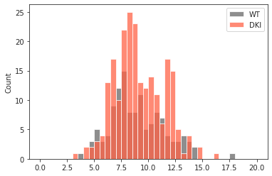
sns.histplot(np.nanstd(data, 0));
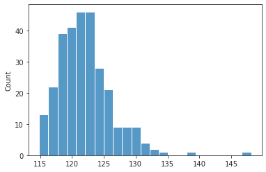
sns.histplot(np.nanmean(data, 0));
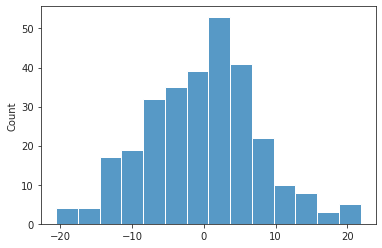
fig, ax = create_figure(1, 1, (15, 3))
ax.plot(bn.nanmean(data, 0))
ax.plot(data[1000])
ax.plot(data[2000], color='k');
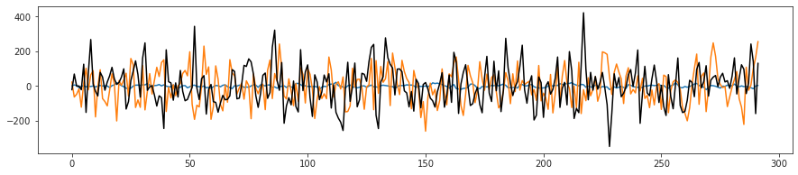
Save graphs¶
def _a2g(adj):
a = adj.copy()
a[np.isnan(a)] = 0
return nx.from_numpy_array(a)
Each run separately¶
%%time
n_samples = 10
percentiles = [5, 10, 15, 20, 25]
adj_all = {}
thres_all = collections.defaultdict(dict)
for key, data in tqdm(data_all.items()):
a, _ = get_adj_mat(data, 'pearson', p_val=1)
adj_all[key] = a
path = '_'.join([
f"n-{mice.cfg.nn}*{mice.cfg.ll}",
'bp(0.008,0.28)_bold_rest_pearson',
key,
])
path = pjoin(mice.cfg.svinet_dir, path, 'real')
thresholds = calculate_threshold(
a, [p / 100 for p in percentiles])
for perc, th in zip(percentiles, thresholds):
ab = dc(a)
ab[a <= th] = 0
thres_all[perc][key] = th
save_graph(_a2g(ab), perc, path, n_samples)
_ = save_obj(
obj=adj_all,
file_name='AD_adj',
save_dir=tmp_dir,
mode='npy',
)
[PROGRESS] 'AD_adj.npy' saved at /home/hadi/Dropbox/git/jb-Ca-fMRI/tmp
CPU times: user 3h 26min 37s, sys: 49min 9s, total: 4h 15min 46s
Wall time: 4h 21min 17s
Session level¶
sessions = []
for k in data_all:
sessions.append('_'.join(k.split('_')[:2]))
sessions = sorted(set(sessions))
len(sessions)
118
%%time
for key in sessions:
data = np.concatenate(list(map(
operator.itemgetter(1),
filter(lambda t: key in t[0], data_all.items())
)), axis=-1)
a, _ = get_adj_mat(data, 'pearson', p_val=1)
adj_all[key] = a
path = '_'.join([
f"n-{mice.cfg.nn}*{mice.cfg.ll}",
'bp(0.008,0.28)_bold_rest_pearson',
key,
])
path = pjoin(mice.cfg.svinet_dir, path, 'real')
thresholds = calculate_threshold(
a, [p / 100 for p in percentiles])
for perc, th in zip(percentiles, thresholds):
ab = dc(a)
ab[a <= th] = 0
thres_all[perc][key] = th
save_graph(_a2g(ab), perc, path, n_samples)
_ = save_obj(
obj=adj_all,
file_name='AD_adj',
save_dir=tmp_dir,
mode='npy',
)
len(adj_all)
[PROGRESS] 'AD_adj.npy' saved at /home/hadi/Dropbox/git/jb-Ca-fMRI/tmp
CPU times: user 1h 10min 50s, sys: 19min 7s, total: 1h 29min 57s
Wall time: 1h 32min 36s
466
Animal level¶
animals = []
for k in data_all:
animals.append(k.split('_')[0])
animals = sorted(set(animals))
len(animals)
69
%%time
for key in animals:
data = np.concatenate(list(map(
operator.itemgetter(1),
filter(lambda t: key in t[0], data_all.items())
)), axis=-1)
a, _ = get_adj_mat(data, 'pearson', p_val=1)
adj_all[key] = a
path = '_'.join([
f"n-{mice.cfg.nn}*{mice.cfg.ll}",
'bp(0.008,0.28)_bold_rest_pearson',
key,
])
path = pjoin(mice.cfg.svinet_dir, path, 'real')
thresholds = calculate_threshold(
a, [p / 100 for p in percentiles])
for perc, th in zip(percentiles, thresholds):
ab = dc(a)
ab[a <= th] = 0
thres_all[perc][key] = th
save_graph(_a2g(ab), perc, path, n_samples)
_ = save_obj(
obj=adj_all,
file_name='AD_adj',
save_dir=tmp_dir,
mode='npy',
)
len(adj_all)
[PROGRESS] 'AD_adj.npy' saved at /home/hadi/Dropbox/git/jb-Ca-fMRI/tmp
CPU times: user 42min 16s, sys: 12min 16s, total: 54min 32s
Wall time: 56min 33s
535
Group level¶
groups = []
for k in data_all:
g = k.split('_')[0].split('-')[1]
g = re.findall("[a-zA-Z]+", g).pop()
groups.append(f"sub-{g}")
groups = sorted(set(groups))
len(groups)
2
groups
['sub-DKI', 'sub-WT']
%%time
for key in groups:
data = np.concatenate(list(map(
operator.itemgetter(1),
filter(lambda t: key in t[0], data_all.items())
)), axis=-1)
print(key, data.shape)
a, _ = get_adj_mat(data, 'pearson', p_val=1)
adj_all[key] = a
path = '_'.join([
f"n-{mice.cfg.nn}*{mice.cfg.ll}",
'bp(0.008,0.28)_bold_rest_pearson',
key,
])
path = pjoin(mice.cfg.svinet_dir, path, 'real')
thresholds = calculate_threshold(
a, [p / 100 for p in percentiles])
for perc, th in zip(percentiles, thresholds):
ab = dc(a)
ab[a <= th] = 0
thres_all[perc][key] = th
save_graph(_a2g(ab), perc, path, n_samples)
_ = save_obj(
obj=adj_all,
file_name='AD_adj',
save_dir=tmp_dir,
mode='npy',
)
len(adj_all)
sub-DKI (2365, 66239)
sub-WT (2365, 37141)
[PROGRESS] 'AD_adj.npy' saved at /home/hadi/Dropbox/git/jb-Ca-fMRI/tmp
CPU times: user 2min 53s, sys: 1min 16s, total: 4min 9s
Wall time: 17min 12s
537
Finalkly, group/session¶
group_ses = []
for k in data_all:
sub, ses, run = k.split('_')
g = re.findall(r"[A-Z]+", sub.split('-')[1]).pop()
group_ses.append(f"sub-{g}_{ses}")
group_ses = sorted(set(group_ses))
len(group_ses)
10
group_ses = {k: [] for k in group_ses}
for k in data_all:
sub, ses, run = k.split('_')
g = re.findall(r"[A-Z]+", sub.split('-')[1]).pop()
group_ses[f"sub-{g}_{ses}"].append(k)
list(group_ses)
[ 'sub-DKI_ses-1', 'sub-DKI_ses-2', 'sub-DKI_ses-3', 'sub-DKI_ses-5', 'sub-DKI_ses-6', 'sub-WT_ses-1', 'sub-WT_ses-2', 'sub-WT_ses-3', 'sub-WT_ses-5', 'sub-WT_ses-6' ]
%%time
for key, run_list in group_ses.items():
data = np.concatenate(list(map(
operator.itemgetter(1),
filter(
lambda t: t[0] in run_list,
data_all.items()
)
)), axis=-1)
print(key, data.shape)
a, _ = get_adj_mat(data, 'pearson', p_val=1)
adj_all[key] = a
path = '_'.join([
f"n-{mice.cfg.nn}*{mice.cfg.ll}",
'bp(0.008,0.28)_bold_rest_pearson',
key,
])
path = pjoin(mice.cfg.svinet_dir, path, 'real')
thresholds = calculate_threshold(
a, [p / 100 for p in percentiles])
for perc, th in zip(percentiles, thresholds):
ab = dc(a)
ab[a <= th] = 0
thres_all[perc][key] = th
save_graph(_a2g(ab), perc, path, n_samples)
_ = save_obj(
obj=adj_all,
file_name='AD_adj',
save_dir=tmp_dir,
mode='npy',
)
len(adj_all)
sub-DKI_ses-1 (2365, 13520)
sub-DKI_ses-2 (2365, 10775)
sub-DKI_ses-3 (2365, 9554)
sub-DKI_ses-5 (2365, 17084)
sub-DKI_ses-6 (2365, 15306)
sub-WT_ses-1 (2365, 8974)
sub-WT_ses-2 (2365, 9024)
sub-WT_ses-3 (2365, 7747)
sub-WT_ses-5 (2365, 6993)
sub-WT_ses-6 (2365, 4403)
[PROGRESS] 'AD_adj.npy' saved at /home/hadi/Dropbox/git/jb-Ca-fMRI/tmp
CPU times: user 7min 13s, sys: 2min 23s, total: 9min 36s
Wall time: 11min 6s
547
Plot threshold values¶
list(thres_all)
[5, 10, 15, 20, 25]
greys = sns.color_palette('Greys_r', n_colors=15)
greys
oranges = sns.color_palette('Oranges_r', n_colors=20)
oranges
runlevel_wt = [v for k, v in thres_all[10].items() if k in data_all and 'WT' in k]
seslevel_wt = [v for k, v in thres_all[10].items() if k in sessions and 'WT' in k]
gseslevel_wt = [v for k, v in thres_all[10].items() if k in group_ses and 'WT' in k]
runlevel_dki = [v for k, v in thres_all[10].items() if k in data_all and 'DKI' in k]
seslevel_dki = [v for k, v in thres_all[10].items() if k in sessions and 'DKI' in k]
gseslevel_dki = [v for k, v in thres_all[10].items() if k in group_ses and 'DKI' in k]
data2p_wt = {
'run': runlevel_wt,
'ses': seslevel_wt,
'g_ses': gseslevel_wt,
}
data2p_dki = {
'run': runlevel_dki,
'ses': seslevel_dki,
'g_ses': gseslevel_dki,
}
for k, v in data2p_wt.items():
print(f"{k} level\t# WT: {len(v)},\t# DKI: {len(data2p_dki[k])}")
run level # WT: 125, # DKI: 223
ses level # WT: 42, # DKI: 76
g_ses level # WT: 5, # DKI: 5
def _show_thres():
kws = {
'stat': 'percent',
'bins': np.linspace(0, 0.16, 33),
}
greys = sns.color_palette('Greys_r', n_colors=15)
oranges = sns.color_palette('Oranges_r', n_colors=20)
fig, axes = create_figure(1, len(thres_all), (13, 2.9), 'all', 'all', constrained_layout=True)
for i, (perc, thres_dict) in enumerate(thres_all.items()):
runlevel_wt = [v for k, v in thres_dict.items() if k in data_all and 'WT' in k]
seslevel_wt = [v for k, v in thres_dict.items() if k in sessions and 'WT' in k]
gseslevel_wt = [v for k, v in thres_dict.items() if k in group_ses and 'WT' in k]
runlevel_dki = [v for k, v in thres_dict.items() if k in data_all and 'DKI' in k]
seslevel_dki = [v for k, v in thres_dict.items() if k in sessions and 'DKI' in k]
gseslevel_dki = [v for k, v in thres_dict.items() if k in group_ses and 'DKI' in k]
data2p_wt = {
'run': runlevel_wt,
'ses': seslevel_wt,
'g_ses': gseslevel_wt,
}
data2p_dki = {
'run': runlevel_dki,
'ses': seslevel_dki,
'g_ses': gseslevel_dki,
}
ax = axes[i]
for j, (k, v) in enumerate(data2p_wt.items()):
sns.histplot(v, label=f'WT ({k})', color=greys[4*j + 1], ax=ax, **kws)
sns.histplot(data2p_dki[k], label=f'DKI ({k})', color=oranges[4*j + 5], ax=ax, **kws)
ax.set_title(f"d = {perc / 100:0.2f} %")
if i == len(thres_all) - 1:
ax.legend()
plt.show()
_show_thres()
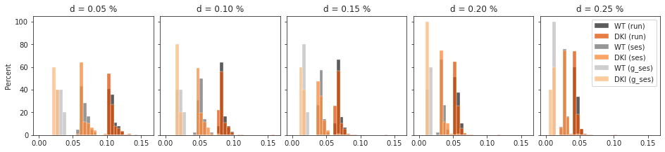
Edit Jan 3rd, 2023¶
Running below code in KABA to save graphs in svinet worspace. Then, will run ./loop_svinet.sh.
mice = Mice(Config(128, resolution=25))
mice.set_band(band_bo=(0.008,0.28))
ROI lookup not found, time to run organize_func() . . .
combine metadata not found, time to run cat_data() . . .
adj = np.load(pjoin(tmp_dir, 'AD_adj.npy'), allow_pickle=True).item()
len(adj)
547
Save graphs from loaded adj¶
def _a2g(adj):
a = adj.copy()
a[np.isnan(a)] = 0
return nx.from_numpy_array(a)
def _save_graphs(a, key, percentiles):
path = '_'.join([
f"n-{mice.cfg.nn}*{mice.cfg.ll}",
'bp(0.008,0.28)_bold_rest_pearson',
key,
])
path = pjoin(mice.cfg.svinet_dir, path, 'real')
thresholds = calculate_threshold(
a, [p / 100 for p in percentiles])
for perc, th in zip(percentiles, thresholds):
ab = dc(a)
ab[a <= th] = 0
save_graph(_a2g(ab), perc, path, n_samples)
%%time
n_samples = 10
percentiles = [5, 10, 15, 20, 25]
with joblib.parallel_backend('multiprocessing'):
joblib.Parallel(n_jobs=-1)(
joblib.delayed(_save_graphs)
(a, key, percentiles) for
key, a in adj.items()
)
CPU times: user 17.7 s, sys: 45.5 s, total: 1min 3s
Wall time: 30min 32s
Now running this (on KABA):¶
time ./loop_svinet.sh 128 3 10 p10-sample 500 bold rest "0.008,0.28" pearson "sub[-_0-9a-zA-Z]*"